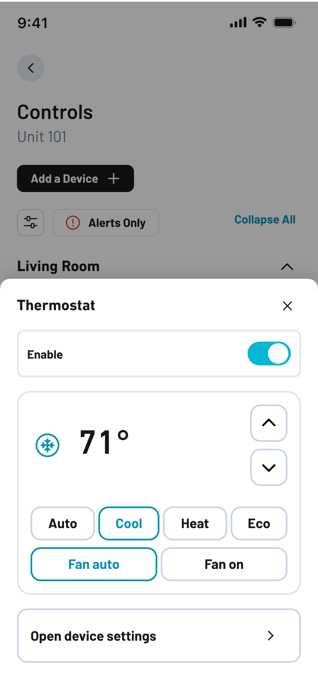
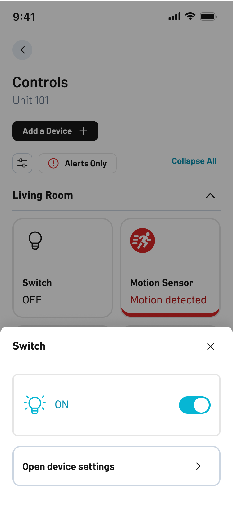
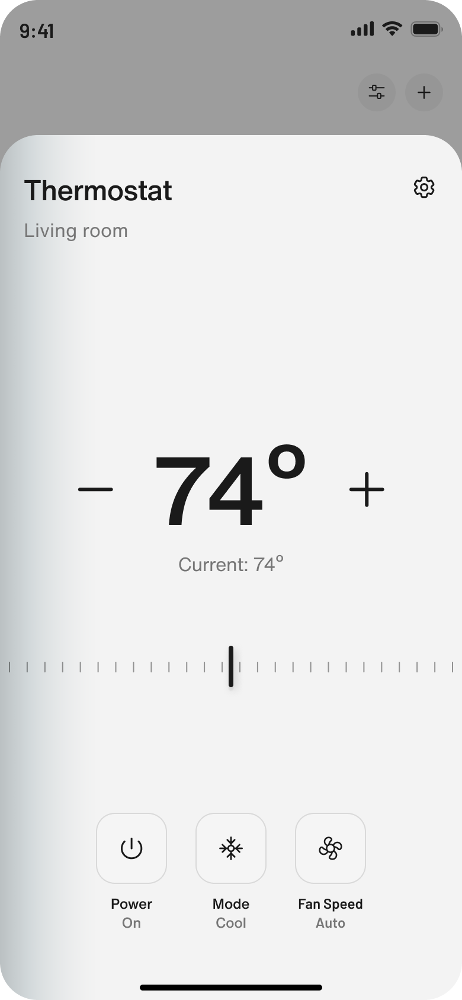
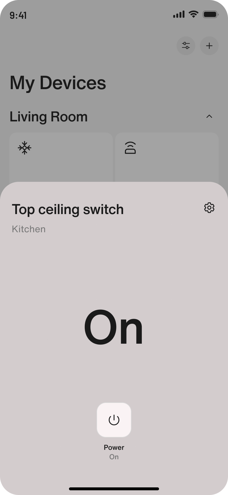
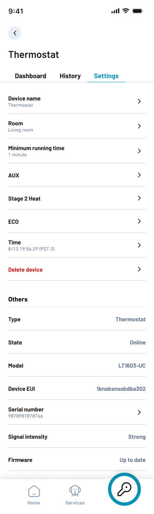
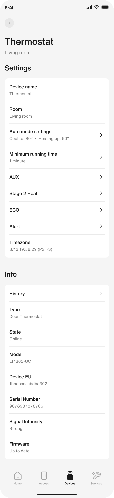
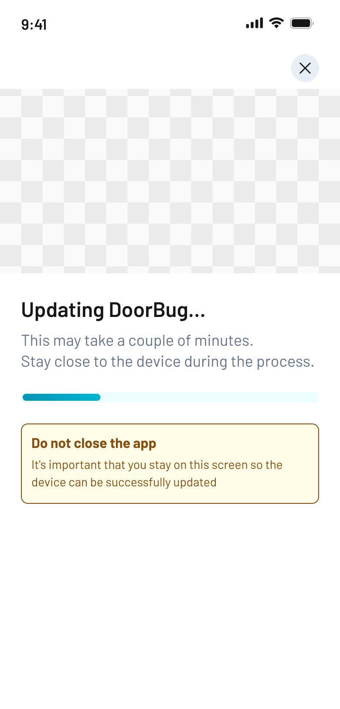
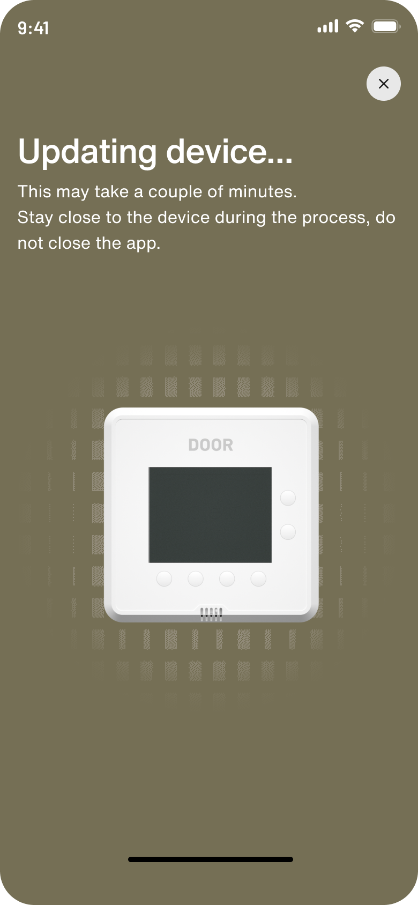
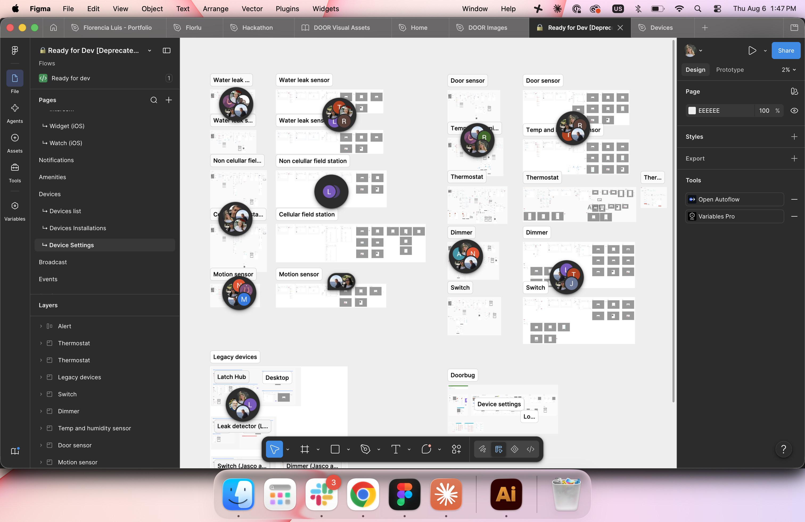
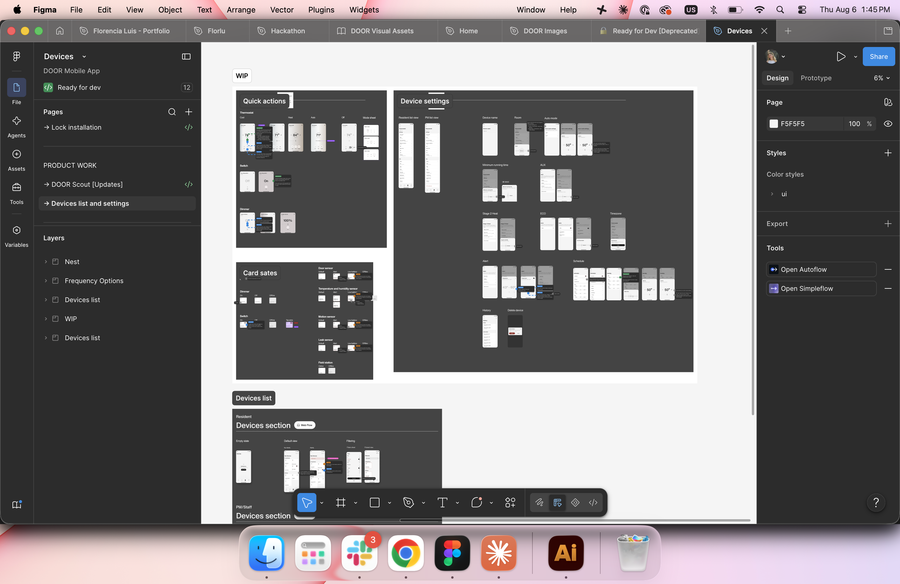

A smart home that's easier to use.Un Smart home más fácil de usar.
A redesign of the smart home devices in the DOOR app: quick access, device details and installation, rebuilt so the everyday action is the easy one.Rediseño de los dispositivos de smart home en la app de DOOR: acceso rápido, detalle del dispositivo e instalación, rehechos para que la acción de todos los días sea la fácil.

Having every feature exposed at once created a lot of confusion for users.Todas las funciones expuestas a la vez generaba mucha confusion para los usuarios
Users were struggling to perform simple actions. The interface was dense: every capability a device had was exposed at first sight, including the ones almost nobody touches from one month to the next.A los usuarios les costaba realizar acciones simples. La interfaz era compleja: todas las capacidades del dispositivo estaban expuestas a primera vista, incluidas las que casi nadie toca de un mes al otro.
Configuration and history sat at the same level as turning something on. The daily action had to compete with settings that belong to setup day.La configuración y el historial estaban al mismo nivel que encender algo. La acción diaria competía con ajustes que pertenecen al día de la instalación.
The UI was simplified, and settings and history moved to a secondary screen.Se simplificó la UI, y settings e history pasaron a una pantalla secundaria.
Functionality first, with every decision traced back to a UX principle.Primero la funcionalidad, con cada decisión apoyada en un principio de UX.
Map the flow before drawing itMapear el flujo antes de dibujarlo
Each release started from the journey: trigger, actions, pain points, opportunities. Support tickets and usage data decided what to fix first.Cada release arrancaba desde el journey: disparador, acciones, pain points, oportunidades. Los tickets de soporte y los datos de uso definían qué resolver primero.
One system, every deviceUn sistema, todos los dispositivos
One bottom sheet, one settings screen. Built with atomic design, where everything is componentized for easier implementation down the line.Una bottom sheet, una pantalla de configuraciones. Creadas con atomic design, donde todo esta componetizado para una mejor implementación posterior
Ship in slicesEntregar en partes
Handoff flow by flow in roadmap order, with prototypes for the states that are hard to explain in a spec.Hand-off flujo por flujo en el orden del roadmap, con prototipos para los estados difíciles de explicar en una spec.
A cleaner screen made it easier to use.Una pantalla más limpia generó un uso más fácil
Each device type had grown its own modal, its own settings screen and its own installation copy. With the redesign, the only screens that stay unique per device are their respective bottom sheets. Settings and history were unified under a single template — making it easier not just to build, but for users to adapt to.Cada tipo de dispositivo había desarrollado su propio modal, su propia pantalla de ajustes y sus propios textos de instalación. Junto con el rediseño, las únicas pantallas que son únicas son las bottom sheets respectivas a cada dispositivo. Settings y history fueron unificadas bajo un único template. Haciendo más fácil no solo la implementación sino también la adaptación del usuario.
Quick access modalModal de quick access
Tapping the card opens a quick-action bottom sheet. For the thermostat, it's a cleaner interface that makes daily actions easier to use. For other devices like the Dimmer and Switch, the interface is simply easier to use since the tap area is larger.Al hacer tap en la card, se abre un bottom sheet de acción rápida. En el caso el thermostat es una interfaz más limpia y más fácil de utilizar las acciones diarias. En los otros dispositivos como el Dimmer y Switch, la interfaz es simplemente más fácil de utilizar ya que el tap area es mayor.




Device detailsDetalle del dispositivo
Settings and history left the first view and became a screen of their own — the one you open on setup day or when something is wrong, not every day.Settings e history salieron de la primera vista y pasaron a ser una pantalla propia — la que se abre el día de la instalación o cuando algo falla, no todos los días.


Installation flowFlujo de instalación
We updated not just the UI — there was also engineering work to make updates faster and give real feedback. Previously the time was estimated and the progress bar was fake, giving frustrating feedback to the user when it got stuck at 90% if something failed.Se actualizó no sólo la UI sino también hubo un trabajo de ingeniería para hacer las actualizaciones más rápidas y con feedback real. Anteriormente el tiempo era estimado y la barra de progreso era falsa, dando un feedback frustrante para el usuario al quedar parada en 90% si algo fallaba.


And the file it all lives inY el archivo donde vive todo
Handoff only works if engineering can find the screen. The file was a mess of screens, comments and deprecated stuff. Now that there are templates for the settings and history screens, the file is simpler and easier to manage.El handoff sólo funciona si ingeniería encuentra la pantalla. El archivo era un caos de pantallas, comentarios y cosas deprecadas. Al ahora tener plantillas para las pantallas de settings y history, el archivo fue simplificado y más fácil de gestionar.

